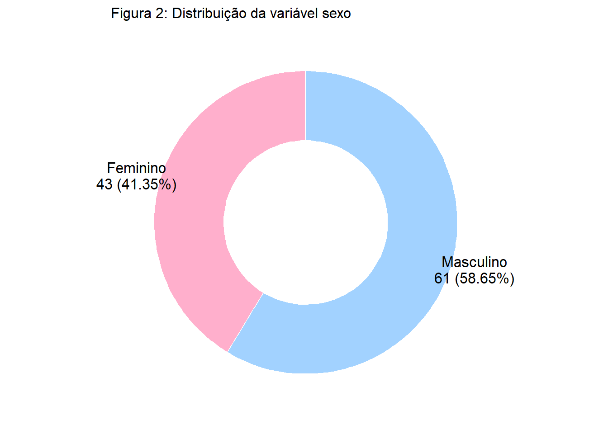

| Min | Q1 | Med | Média | Q3 | Max | D. Padrão | CV | |
|---|---|---|---|---|---|---|---|---|
| Comprimento Total | 75,0 | 85 | 88,5 | 87,91 | 90,5 | 96,5 | 4,18 | 0,05 |
| Largura Crânio | 51,5 | 55 | 56,4 | 56,59 | 57,7 | 67,7 | 2,57 | 0,05 |
LAB 2:
Introdução à Regressão Linear Simples
Introdução
O presente relatório está subdividido em duas partes, tendo em vista terem sido disponibilizados dois arquivos para análise, este relatório vem trazendo as análises conforme os pré-requisitos solicitados para cada conjunto de dados. Tendo como principal objetivo a introdução das técnicas de Regressão Linear Simples e a pratica da elaboração de relatórios analíticos fundamentadas na Análise Exploratória de Dados.
Apresentação
Nesta primeira parte a análise se dará sobre os dados contendo medidas morfológicas de 104 gambás das montanhas, que foram capturados através de armadilhas em sete localizações na Inglaterra. As variáveis contidas nesse arquivo são:
- Sexo (sex);
- Largura do crânio (skullw);
- Comprimento total (totlngth).
Objetivo
O objetivo dessa análise visa responder aos seguintes tópicos:
Descrição do comportamento de cada uma das variáveis, a partir das medidas morfológicas segundo o sexo.
Representação gráfica da distribuição do sexo.
Apresentação de um histograma para as variáveis morfológicas.
Discução da relação entre as variáveis morfológicas.
Tratamento dos dados.
Avaliação do ajuste de um modelo linear de regressão.
Caso o ajuste seja adequado, apresentar a reta ajustada pelo modelo.
Análise dos dados
Composto por três características (variáveis) morfológicas dos gambás, em que duas destas são classificadas como aritméticas continuas, sendo estas a largura do crânio (skullw) e o comprimento total (totlngth) e uma variável classificada como categórica ordinal, sendo esta sexo(sex).
A seguir são apresentadas as tabelas com as principais medidas resumo por sexo dos gambás.
Nota-se que as medidas de resumo não apresentam diferenças significativas entre os dois sexos, avaliando o Coeficiente de Variação de Pearson (CV), sendo esta a medida que avalia o grau de variabilidade dos dados em relação a média, constata-se que sua classificação é baixa, possuindo o valor de 5%, menor que o limite considerado baixo (15%), para todas as características independente do sexo. A fim de se possibilitar uma análise visual, a Figura 1 traz os gráficos de caixa (BoxPlot) com as características morfológicas dos gambas separadas por sexo.

A Figura 1 confirma a percepção advinda das medidas resumo, que não há, em princípio, diferenças significativas entre os sexos, apesar de haver alguns pontos atípicos (outliers). É interessante notar a baixa variabilidade entre a largura do crânio para o sexo feminino e seu comportamente aparentemente simétrico, bem como o fato de que apenas o comprimento dos individuos do sexo masculino não apresentou pontos atípicos.
Tendo em vista a média estar representada pelo ponto vermelho na região central do gráfico, possibilitando uma percepção visual acerca da assimetria dos dados ao comparar o posicionamentos da média e da mediana em relação a região central da caixa (região retangular azul da figura), que representa 50% dos dados. Cabe então uma avaliação mais apurada dos dados.
A Figura 2 retrata a distribuição do sexo, possibilitando identificar o quantitativo de informações por sexo.

Apresentação
Com base nos dados sobre a eleição presidencial de 2000 nos Estados Unidos, referentes ao número de votos de cada um dos candidatos por condado no estado da Flórida. Deseja-se investigar a relação entre o número de votos que o candidato Bush recebeu em relação ao número de votos recebidos pelo candidato Buchanan, bem como, trazer um pouco de luz sobre o debate referente aos votos recebidos por Buchanan que poderiam ter sido de Al Gore, se o primeiro não estivesse no pleito. Como Bush e Gore foram os candidatos principais daquela eleição, é de interesse avaliar a relação entre os votos recebidos por Bush e Buchanan na Flórida, que é um Estado importante na corrida presidencial dos EUA. Para isto, ajuste um modelo de regressão linear no qual o número de votos de Bush é usado para predizer o número de votos de Buchanan. Os dados estão disponíveis no arquivo “florida.csv”.
Objetivos
O objetivo dessa análise responderá aos seguintes pontos:
Discutir a relação entre os votos recebidos por Bush e por Buchanan através do uso de diagramas de dispersão.
Avaliar a relevância do argumento que os votos de Buchanan poderiam ser direcionados a Al Gore, caso Buchanan não tivesse participado do pleito.
Tratar dados atipicos.
Obter uma reta ajustada aos dados tratados e predizer a votação de Buchanan caso Bush receba 152.846 votos em determinado condado.
Criar um programa baseado em estimativas de mínimos quadrados, prever a votação de Buchanan, sob as mesmas condições e compará-las.
Análise dos dados
O gráfico de dispersão sugere certa correlação positiva entre os votos de Bush e Buchanan, muito embora se observe que no condado de Palm Beach a votação de Buchanan (3.407 votos) represente um dado inesperado, bem como, em menor medida, a votação de Bush em Dade (289.456 votos). Retirados estes valores discrepantes, esta provável correlação parece ainda mais certa.